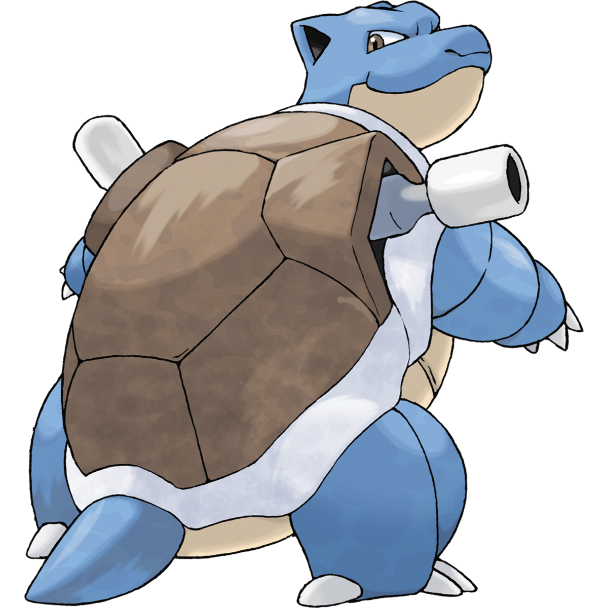
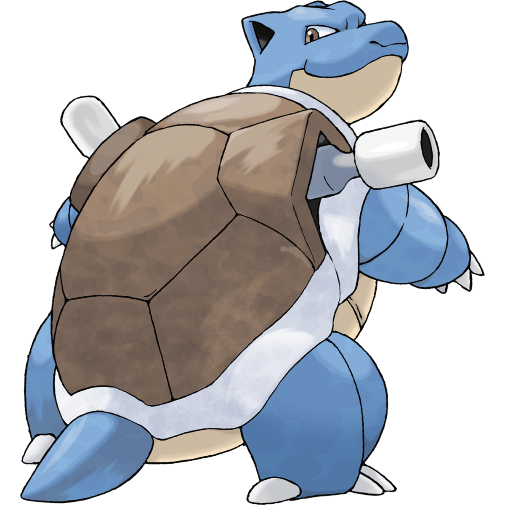

Kanto Map

Squirtle (Japanese: ゼニガメ Zenigame) is a Water-type Pokémon introduced in Generation I. It evolves into Wartortle starting at level 16, which evolves into Blastoise starting at level 36. Along with Bulbasaur and Charmander, Squirtle is one of three starter Pokémon of Kanto available at the beginning of Pokémon Red, Green, Blue, FireRed, and LeafGreen.
Squirtle is a small Pokémon that resembles a light-blue turtle. While it typically walks on its two short legs, it has been shown to run on all fours in Super Smash Bros. Brawl. It has large, purplish or reddish eyes and a slightly hooked upper lip. Each of its hands and feet have three pointed digits. The end of its long tail curls inward. Its body is encased by a tough shell that forms and hardens after birth. This shell is brown on the top, pale yellow on the bottom, and has a thick white ridge between the two halves. Squirtle's shell is a useful tool. It can withdraw into the shell for protection or to sleep. The grooved, rounded shape helps to reduce water resistance, allowing the Pokémon to swim at high speeds. Squirtle can spray foamy water from its mouth with great accuracy. Squirtle is scarce in the wild, although it can be found around small ponds and lakes. The anime has shown that it can be found living on secluded islands with other members of its evolutionary line. In the past, Skull Bash was its signature move. Sharpedo is a natural predator of Squirtle.
Evolutions:
 
